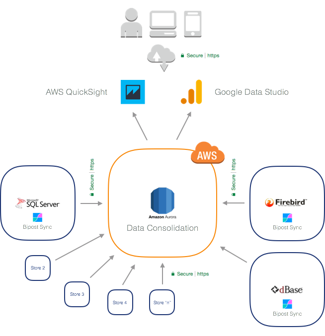
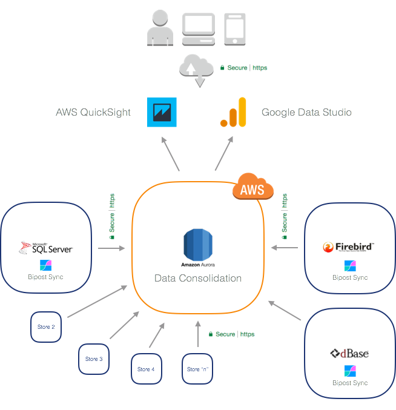

Use Case¶
Use Bipost Sync to power your company with Dashboards and KPI's using Google Data Studio and AWS QuickSight

Want to see a demo? Go to --> Google Data Studio Demo.
Use Bipost Sync to power your company with Dashboards and KPI's using Google Data Studio and AWS QuickSight

Want to see a demo? Go to --> Google Data Studio Demo.